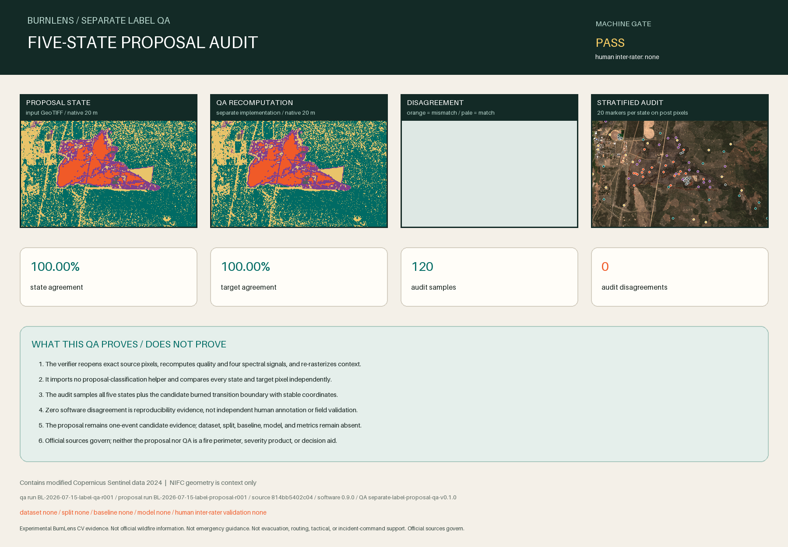

Experimental BurnLens CV evidence. Not official wildfire information. Not emergency guidance. Not evacuation, routing, tactical, or incident-command support. Official sources govern.

Decision
ACCEPT_REVIEWABLE_LABEL_PROPOSAL_DEFER_DATASET
Accept this exact five-state proposal as reviewable evidence only. Separate software QA and rendered audit pass, while independent human inter-rater validation, dataset, split, baseline, and model remain absent.
Machine gate: PASS_SEPARATE_IMPLEMENTATION_QA.
Per-state comparison
| State | Proposal pixels | QA pixels | Exact matches | Audit samples |
|---|---|---|---|---|
| background-candidate | 161,238 | 161,238 | 161,238 | 20 |
| burned | 18,543 | 18,543 | 18,543 | 20 |
| unknown | 71,897 | 71,897 | 71,897 | 20 |
| excluded | 870 | 870 | 870 | 20 |
| review-needed | 17,452 | 17,452 | 17,452 | 20 |
Independence boundary
The verifier is separately invoked, imports no proposal classification helper, reopens source pixels, recomputes quality and spectral evidence, and compares every output pixel. The same Codex director authored both implementations. This is reproducibility and implementation-path QA, not independent human annotation, field validation, or accuracy evidence.
Deterministic audit sample
| Stratum | Row | Column | State | Agreement | dNBR | Pre/post SCL |
|---|---|---|---|---|---|---|
| state-background-candidate | 233 | 378 | background-candidate | pass | -0.0193 | 4 / 4 |
| state-background-candidate | 193 | 449 | background-candidate | pass | -0.0234 | 4 / 4 |
| state-background-candidate | 3 | 415 | background-candidate | pass | -0.0168 | 5 / 4 |
| state-background-candidate | 11 | 286 | background-candidate | pass | -0.0213 | 5 / 5 |
| state-background-candidate | 356 | 399 | background-candidate | pass | -0.0204 | 5 / 5 |
| state-background-candidate | 418 | 277 | background-candidate | pass | -0.0281 | 4 / 4 |
| state-background-candidate | 153 | 176 | background-candidate | pass | -0.0168 | 5 / 5 |
| state-background-candidate | 10 | 571 | background-candidate | pass | -0.0136 | 4 / 4 |
| state-background-candidate | 418 | 596 | background-candidate | pass | -0.0231 | 4 / 4 |
| state-background-candidate | 365 | 568 | background-candidate | pass | -0.0249 | 5 / 4 |
| state-background-candidate | 313 | 262 | background-candidate | pass | 0.0003 | 5 / 5 |
| state-background-candidate | 385 | 556 | background-candidate | pass | -0.0211 | 4 / 4 |
| state-background-candidate | 38 | 428 | background-candidate | pass | -0.0075 | 4 / 4 |
| state-background-candidate | 77 | 248 | background-candidate | pass | -0.0122 | 5 / 5 |
| state-background-candidate | 243 | 42 | background-candidate | pass | -0.0247 | 5 / 5 |
| state-background-candidate | 17 | 369 | background-candidate | pass | 0.0006 | 5 / 5 |
| state-background-candidate | 354 | 43 | background-candidate | pass | 0.0006 | 5 / 5 |
| state-background-candidate | 342 | 501 | background-candidate | pass | -0.0211 | 4 / 4 |
| state-background-candidate | 53 | 118 | background-candidate | pass | -0.0075 | 5 / 5 |
| state-background-candidate | 131 | 234 | background-candidate | pass | -0.0211 | 5 / 5 |
| state-burned | 247 | 205 | burned | pass | 0.2615 | 5 / 5 |
| state-burned | 275 | 282 | burned | pass | 0.3989 | 5 / 5 |
| state-burned | 262 | 197 | burned | pass | 0.3437 | 5 / 5 |
| state-burned | 307 | 145 | burned | pass | 0.2718 | 4 / 5 |
| state-burned | 267 | 151 | burned | pass | 0.2498 | 5 / 5 |
| state-burned | 269 | 297 | burned | pass | 0.2635 | 5 / 5 |
| state-burned | 263 | 172 | burned | pass | 0.3942 | 5 / 5 |
| state-burned | 307 | 269 | burned | pass | 0.2550 | 5 / 5 |
| state-burned | 262 | 245 | burned | pass | 0.2967 | 5 / 5 |
| state-burned | 260 | 302 | burned | pass | 0.2260 | 5 / 5 |
| state-burned | 270 | 156 | burned | pass | 0.2702 | 5 / 5 |
| state-burned | 286 | 380 | burned | pass | 0.4748 | 5 / 5 |
| state-burned | 186 | 180 | burned | pass | 0.2348 | 5 / 5 |
| state-burned | 228 | 278 | burned | pass | 0.3621 | 5 / 5 |
| state-burned | 187 | 313 | burned | pass | 0.2371 | 4 / 5 |
| state-burned | 267 | 320 | burned | pass | 0.3257 | 5 / 5 |
| state-burned | 253 | 176 | burned | pass | 0.3678 | 5 / 5 |
| state-burned | 266 | 144 | burned | pass | 0.2969 | 5 / 5 |
| state-burned | 278 | 175 | burned | pass | 0.3305 | 5 / 5 |
| state-burned | 240 | 252 | burned | pass | 0.4076 | 5 / 5 |
| state-unknown | 324 | 509 | unknown | pass | -0.0388 | 5 / 5 |
| state-unknown | 186 | 23 | unknown | pass | -0.0072 | 5 / 5 |
| state-unknown | 53 | 397 | unknown | pass | -0.0282 | 4 / 4 |
| state-unknown | 188 | 398 | unknown | pass | -0.0137 | 5 / 5 |
| state-unknown | 165 | 191 | unknown | pass | 0.0811 | 5 / 5 |
| state-unknown | 228 | 141 | unknown | pass | -0.1464 | 5 / 5 |
| state-unknown | 47 | 252 | unknown | pass | -0.0296 | 5 / 5 |
| state-unknown | 278 | 442 | unknown | pass | 0.0657 | 5 / 5 |
| state-unknown | 374 | 111 | unknown | pass | -0.0328 | 5 / 5 |
| state-unknown | 314 | 50 | unknown | pass | -0.0040 | 5 / 5 |
| state-unknown | 205 | 117 | unknown | pass | -0.0305 | 5 / 5 |
| state-unknown | 422 | 347 | unknown | pass | -0.0330 | 5 / 5 |
| state-unknown | 168 | 472 | unknown | pass | 0.0085 | 4 / 4 |
| state-unknown | 17 | 20 | unknown | pass | 0.0018 | 5 / 5 |
| state-unknown | 173 | 24 | unknown | pass | 0.0011 | 5 / 5 |
| state-unknown | 136 | 63 | unknown | pass | -0.0306 | 5 / 5 |
| state-unknown | 155 | 291 | unknown | pass | 0.1515 | 5 / 5 |
| state-unknown | 269 | 5 | unknown | pass | 0.0179 | 5 / 5 |
| state-unknown | 431 | 388 | unknown | pass | -0.0305 | 4 / 4 |
| state-unknown | 40 | 549 | unknown | pass | -0.0326 | 5 / 4 |
| state-excluded | 282 | 334 | excluded | pass | 0.0682 | 2 / 2 |
| state-excluded | 305 | 454 | excluded | pass | 0.0602 | 5 / 2 |
| state-excluded | 151 | 96 | excluded | pass | 0.0034 | 6 / 6 |
| state-excluded | 294 | 327 | excluded | pass | 0.0321 | 2 / 2 |
| state-excluded | 284 | 322 | excluded | pass | 0.1372 | 2 / 2 |
| state-excluded | 284 | 324 | excluded | pass | 0.0324 | 2 / 2 |
| state-excluded | 292 | 316 | excluded | pass | 0.4233 | 5 / 2 |
| state-excluded | 149 | 98 | excluded | pass | 0.2130 | 6 / 6 |
| state-excluded | 146 | 92 | excluded | pass | 0.1508 | 6 / 6 |
| state-excluded | 199 | 303 | excluded | pass | 0.3006 | 5 / 2 |
| state-excluded | 196 | 310 | excluded | pass | 0.2053 | 4 / 2 |
| state-excluded | 287 | 329 | excluded | pass | 0.0337 | 2 / 2 |
| state-excluded | 147 | 99 | excluded | pass | -0.0324 | 6 / 6 |
| state-excluded | 300 | 325 | excluded | pass | 0.0073 | 2 / 2 |
| state-excluded | 292 | 317 | excluded | pass | 0.2975 | 5 / 2 |
| state-excluded | 303 | 321 | excluded | pass | 0.1928 | 5 / 2 |
| state-excluded | 139 | 92 | excluded | pass | 0.0037 | 5 / 6 |
| state-excluded | 283 | 314 | excluded | pass | 0.3063 | 2 / 2 |
| state-excluded | 298 | 328 | excluded | pass | 0.0139 | 2 / 2 |
| state-excluded | 148 | 103 | excluded | pass | -0.1112 | 6 / 6 |
| state-review-needed | 268 | 287 | review-needed | pass | 0.2417 | 5 / 5 |
| state-review-needed | 91 | 49 | review-needed | pass | -0.0410 | 7 / 7 |
| state-review-needed | 297 | 381 | review-needed | pass | 0.2776 | 4 / 7 |
| state-review-needed | 146 | 287 | review-needed | pass | 0.2076 | 5 / 5 |
| state-review-needed | 179 | 295 | review-needed | pass | 0.1833 | 5 / 5 |
| state-review-needed | 293 | 401 | review-needed | pass | 0.4493 | 5 / 7 |
| state-review-needed | 230 | 331 | review-needed | pass | 0.1752 | 5 / 5 |
| state-review-needed | 170 | 299 | review-needed | pass | 0.1139 | 5 / 5 |
| state-review-needed | 243 | 453 | review-needed | pass | 0.0200 | 5 / 5 |
| state-review-needed | 260 | 361 | review-needed | pass | 0.1042 | 5 / 5 |
| state-review-needed | 170 | 230 | review-needed | pass | 0.1724 | 5 / 5 |
| state-review-needed | 312 | 363 | review-needed | pass | 0.1467 | 5 / 5 |
| state-review-needed | 224 | 164 | review-needed | pass | 0.0594 | 5 / 5 |
| state-review-needed | 313 | 402 | review-needed | pass | 0.1505 | 5 / 5 |
| state-review-needed | 236 | 155 | review-needed | pass | 0.1844 | 5 / 5 |
| state-review-needed | 148 | 260 | review-needed | pass | 0.0647 | 5 / 5 |
| state-review-needed | 255 | 332 | review-needed | pass | 0.1709 | 5 / 5 |
| state-review-needed | 287 | 310 | review-needed | pass | 0.4490 | 4 / 5 |
| state-review-needed | 207 | 256 | review-needed | pass | 0.1920 | 5 / 5 |
| state-review-needed | 284 | 127 | review-needed | pass | -0.0054 | 5 / 5 |
| burned-transition-boundary | 182 | 305 | review-needed | pass | 0.4713 | 4 / 5 |
| burned-transition-boundary | 309 | 424 | review-needed | pass | 0.1444 | 5 / 5 |
| burned-transition-boundary | 178 | 222 | review-needed | pass | 0.2275 | 5 / 5 |
| burned-transition-boundary | 189 | 161 | review-needed | pass | 0.1944 | 5 / 5 |
| burned-transition-boundary | 270 | 245 | review-needed | pass | 0.1382 | 5 / 5 |
| burned-transition-boundary | 285 | 359 | review-needed | pass | 0.0698 | 5 / 5 |
| burned-transition-boundary | 236 | 296 | review-needed | pass | 0.1739 | 5 / 5 |
| burned-transition-boundary | 265 | 252 | review-needed | pass | 0.2160 | 5 / 5 |
| burned-transition-boundary | 302 | 235 | review-needed | pass | 0.0904 | 5 / 5 |
| burned-transition-boundary | 288 | 309 | review-needed | pass | 0.4676 | 4 / 5 |
| burned-transition-boundary | 224 | 220 | review-needed | pass | 0.3825 | 5 / 5 |
| burned-transition-boundary | 155 | 201 | review-needed | pass | 0.1639 | 5 / 5 |
| burned-transition-boundary | 130 | 275 | review-needed | pass | 0.1561 | 5 / 5 |
| burned-transition-boundary | 282 | 203 | review-needed | pass | 0.1051 | 5 / 5 |
| burned-transition-boundary | 181 | 230 | review-needed | pass | 0.2069 | 5 / 5 |
| burned-transition-boundary | 138 | 283 | review-needed | pass | 0.2117 | 5 / 5 |
| burned-transition-boundary | 164 | 183 | review-needed | pass | 0.1326 | 5 / 5 |
| burned-transition-boundary | 158 | 226 | review-needed | pass | 0.2842 | 4 / 5 |
| burned-transition-boundary | 239 | 144 | review-needed | pass | 0.1115 | 5 / 5 |
| burned-transition-boundary | 164 | 151 | review-needed | pass | 0.1169 | 5 / 5 |
Traceability
QA run: BL-2026-07-15-label-qa-r001
Proposal run: BL-2026-07-15-label-proposal-r001
Git source: 814bb5402c04708f1515135683eac1304bf075c1
Software / report / QA: 0.9.0 / burn-scar-label-proposal-qa-v0.1.0 / separate-label-proposal-qa-v0.1.0
AOI / target / schema / proposal: aoi-darlene3-model-v0.2.0 / target-burn-scar-v0.2.0 / burn-scar-five-state-schema-v0.1.0 / darlene3-burn-scar-label-proposal-v0.1.0
Application / dataset / split / baseline / model: none / none / none / none / none
Boundaries
- Software agreement does not make the proposal accepted ground truth.
- No independent human inter-rater validation or field validation occurred.
- No dataset, split, baseline, model, metric, application, deployment, operational result, official status, or endorsement exists.
- Contains modified Copernicus Sentinel data 2024. NIFC geometry is context only. Official sources govern.